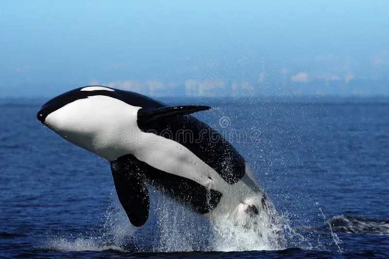

Whale
Whales are the largest animals on Earth and they inhabit all the oceans. Some species like the blue whale and the humpback whale are commonly seen in tourist spots.
Shark

Sharks are powerful and often feared creatures. They inhabit all the oceans and have fascinating stories behind them. Many species are endangered due to human activities.
Dolphin

Dolphins are highly intelligent marine mammals that live in various types of ocean. They are known for their sociable behavior and the complex sounds they produce. Many dolphin species are endangered due to habitat loss and bycatch in fishing operations.